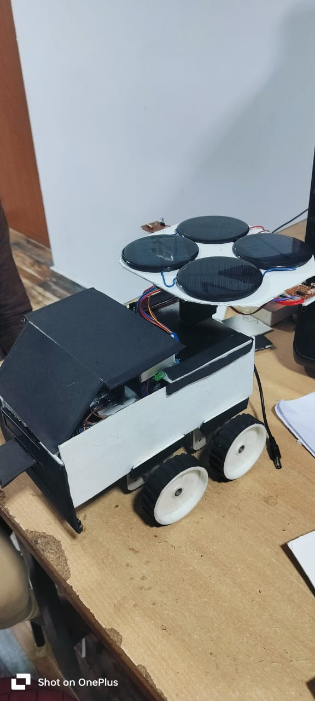

Efficient solar tracking for maximum energy absorption
Key Components
Solar Panels
Adjusts direction to absorb maximum sunlight and generate energy.
ESP32 Controller
Processes sensor data and controls the movement of the rover.
BMS MODULE AND BATTERY
Stores excess energy to ensure smooth operation at all times.
Motors
Drives the rover towards the best sunlight direction.
Buck converter
Regulates and stabilizes the voltage supply to ensure safe operation of all electronic components
LDR Sensor
Detects the intensity of sunlight and helps determine the optimal direction for maximum energy absorption.

Chassis
The structural framework that holds all components together.
Motor Driver
Controls the power supplied to the motors based on ESP32 commands.
I2C LED
Displays system status and real-time information about the rover.
How It Works
graph TD;
A[Light sensors detect sunlight] --> B[ESP32 processes data];
B --> C[Motors adjust rover’s position];
C --> D[Solar panels generate energy];
D --> E[Excess energy stored in battery];
E --> F[Continuous tracking for max absorption];
Real-Life Applications
Smart Agriculture: Tracks sunlight for efficient solar farming.
Disaster Relief: Provides renewable energy in remote areas.
Space Missions: Used in Mars rovers for self-sustaining energy.
Solar Power Plants: Enhances efficiency of solar panels.
Arduino Code
#include BluetoothSerial.h
BluetoothSerial bt;
String data=" ";
#define m1 27
#define m2 14
#define m3 12
#define m4 13
#define buzzer 23
#define led 15
int i=0;
int j=0;
#include
LiquidCrystal_I2C lcd(0x27, 16, 2);
#include
Servo sg90;
int initial_position = 90;
int starting_position = 90;
int LDR1 = 34;
int LDR2 = 35;
int R1;
int R2;
int error = 5;
#define ANALOG_IN_PIN 39 // for solar input
float adc_voltage = 0.0;
float in_voltage = 0.0;
float r1 = 30100.0; // check resistors in the vltage sensor module
float r2 = 7500.0; // check resistors in the vltage sensor module
float ref_voltage = 3.3;
int adc_value = 0;
TaskHandle_t Task1;
TaskHandle_t Task2;
void setup()
{
Serial.begin(9600);
pinMode(2,OUTPUT);
digitalWrite(2,LOW);
bt.begin("SR_AUTO_ROBOT");
pinMode(m1,OUTPUT);
pinMode(m2,OUTPUT);
pinMode(m3,OUTPUT);
pinMode(m4,OUTPUT);
digitalWrite(m1,LOW);
digitalWrite(m2,LOW);
digitalWrite(m3,LOW);
digitalWrite(m4,LOW);
pinMode(buzzer,OUTPUT);
pinMode(led,OUTPUT);
digitalWrite(buzzer,HIGH);
digitalWrite(led,LOW);
pinMode(2,OUTPUT);
digitalWrite(2,HIGH);
pinMode(LDR1, INPUT);
//Making the LDR pin as input
pinMode(LDR2, INPUT);
pinMode(ANALOG_IN_PIN,INPUT);
sg90.attach(5);
// attaches the servo on pin 9
delay(500);
lcd.init();
lcd.backlight();
sg90.write(initial_position);
//Move servo at 90 degree
delay(2000);
lcd.clear();
lcd.print("INITIATING SERVO");
delay(2000);
lcd.clear();
lcd.print("*** READY ***");
delay(2000);
lcd.clear();
Serial.println("READY");
xTaskCreatePinnedToCore(
Task1code,
/* Task function. */
"Task1",
/* name of task. */
10000,
/* Stack size of task */
NULL,
/* parameter of the task */
1,
/* priority of the task */
&Task1,
/* Task handle to keep track of created task */
0);
/* pin task to core 0 */
delay(500);
xTaskCreatePinnedToCore(
Task2code,
/* Task function. */
"Task2",
/* name of task. */
10000,
/* Stack size of task */
NULL,
/* parameter of the task */
1,
/* priority of the task */
&Task2,
/* Task handle to keep track of created task */
1);
/* pin task to core 1 */
delay(500);
}
void Task1code( void * pvParameters )
{
Serial.print("Task1 running on core ");
Serial.println(xPortGetCoreID());
for(;;)
{
if(bt.available()>0)
{
data=" ";
data=bt.readString();
Serial.print("DATA : ");Serial.println(data);
}
vehicle_check();
}
}
void Task2code( void * pvParameters )
{
Serial.print("Task2 running on core ");
Serial.println(xPortGetCoreID());
for(;;)
{
right_left();
solar_voltage();
if(in_voltage <= 0 && (R1 <= 80|| R2 <=80))
{
digitalWrite(buzzer,LOW);
}
else
{
digitalWrite(buzzer,HIGH);
}
lcd.clear();
lcd.print("VOLTAGE : ");lcd.print(in_voltage);
delay(300);
}
}
void loop()
{
}
void vehicle_check()
{
Serial.println("IN LOOP");
if(data=="FORWARD" || data=="Forward" || data=="forward")
{
digitalWrite(m1,HIGH);
digitalWrite(m2,LOW);
digitalWrite(m3,HIGH);
digitalWrite(m4,LOW);
}
else if(data=="BACKWARD" || data=="Backward" || data=="backward")
{
digitalWrite(m1,LOW);
digitalWrite(m2,HIGH);
digitalWrite(m3,LOW);
digitalWrite(m4,HIGH);
}
else if(data=="LEFT" || data=="Left" || data=="left")
{
digitalWrite(m1,LOW);
digitalWrite(m2,HIGH);
digitalWrite(m3,HIGH);
digitalWrite(m4,LOW);
}
else if(data=="RIGHT" || data=="Right" || data=="right")
{
digitalWrite(m1,HIGH);
digitalWrite(m2,LOW);
digitalWrite(m3,LOW);
digitalWrite(m4,HIGH);
}
else if(data=="STOP" || data=="Stop" || data=="stop")
{
digitalWrite(m1,LOW);
digitalWrite(m2,LOW);
digitalWrite(m3,LOW);
digitalWrite(m4,LOW);
}
else if(data=="HORN" || data=="Horn" || data=="horn")
{
sound();
}
else if(data=="FLASH" || data=="Flash" || data=="flash")
{
light_blink();
}
else if(data=="LIGHT" || data=="Light" || data=="light")
{
j=j+1;
if(j==1)
{
digitalWrite(led,HIGH);
}
else
{
j=0;
digitalWrite(led,LOW);
}
}
}
void light_blink()
{
digitalWrite(led,HIGH);
delay(500);
digitalWrite(led,LOW);
delay(300);
digitalWrite(led,HIGH);delay(500);digitalWrite(led,LOW);delay(300);
}
void sound()
{
digitalWrite(buzzer,HIGH);
delay(500);
digitalWrite(buzzer,LOW);
delay(300);
digitalWrite(buzzer,HIGH);
delay(500);
digitalWrite(buzzer,LOW);
delay(300);
}
void right_left()
{
R1 = analogRead(LDR1);
R1=map(R1,0,4095,0,100);
R2 = analogRead(LDR2);
R2=map(R2,0,4095,0,100);
Serial.print("ldr1");Serial.println(R1);
Serial.print("ldr2");Serial.println(R2);
int diff1= abs(R1 - R2); // Calculating the difference between the LDR's
int diff2= abs(R2 - R1);
if((diff1 <= error) || (diff2 <= error))
{
initial_position; // new lines
lcd.clear();
lcd.print(" SAME LIGHT ON ");
lcd.setCursor(0,1);
lcd.print(" BOTH SIDES ");
delay(500);
}
else
{
if(R1 > R2)
{
initial_position = initial_position - 10; //Move the servo towards 0 degree
if(initial_position <= 40) // new lines
{
initial_position = 40;
}
lcd.clear();
lcd.print(" MOVING TOWARDS ");
lcd.setCursor(0,1);
lcd.print(" 0 degrees ");
delay(300);
}
if(R1 < R2)
{
initial_position = initial_position + 10; //Move the servo towards 180 degree
if(initial_position >= 140) // new lines
{
initial_position = 140;
}
lcd.clear();
lcd.print(" MOVING TOWARDS ");
lcd.setCursor(0,1);
lcd.print(" 180 degrees ");
delay(300);
}
}
sg90.write(initial_position); // write the position to servo
delay(100);
}
void solar_voltage()
{
adc_value = analogRead(ANALOG_IN_PIN);
adc_voltage = (adc_value * ref_voltage) / 4096.0;
in_voltage = adc_voltage / (r2/(r1+r2)) ;
Serial.print("Input Voltage = ");
Serial.println(in_voltage, 2);
delay(50);
}